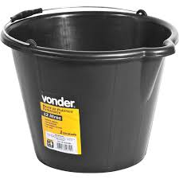

Hoje foi o Grande dia que chegou o Blade de tinta preto da Vonder que eu encomendei dia 22 de fevereiro. Ele estava com o cheiro de um balde de tinta da Vonder.
hoje, o meu Balde de tinta preto da vonder quase fugiu, pois os Baldes de tinta preto vonder são muito rápidos e agilidosos.
Os baldes de tinta preto da Vonder são extremamente rápidos, e capazes de alcançar uma velocidade de 70 m/s (252 km/h).
Hoje o meu balde de tinta preto da Vonder comeu muita coisa, pois dei muita comida, porque tropecei e tive pregiça de juntar. E ele comeu Tudo!
Eu estava planejando para dar um nome para o meu Balde de tinta preto da Vonder, porém eu ia dar o nome para ele no sétimo dia, mas, pela minha impaciência escolhi hoje mesmo.